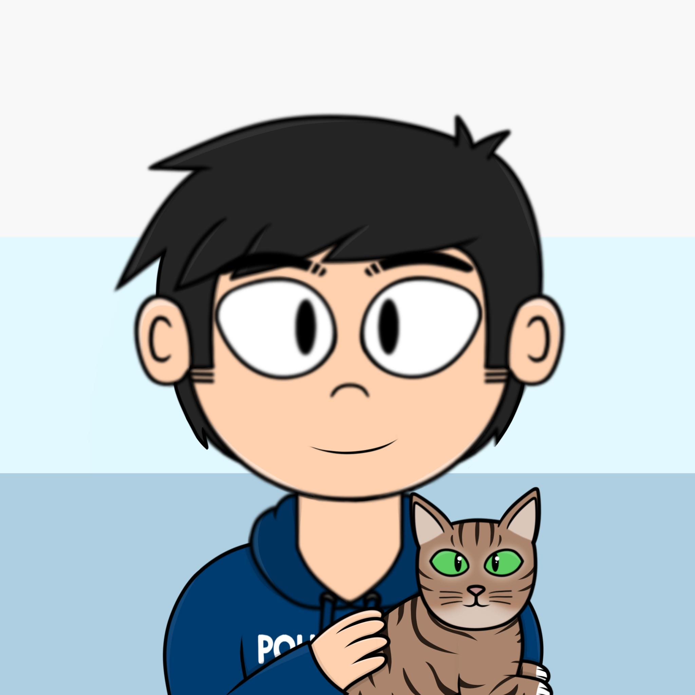

Chesscraft Overview
Chesscraft is a [2020] 20 year old jack of all trades, who seeks to attain as much knowledge and skill in the areas of which he is interested in. He is currently freelancing in areas such as 'web development', 'art', 'writing' and '3d model designs for vtube'
This website seeks to provide an honest and open reflection of his strengths and weaknesses, his current projects and his goals and desires in life.
